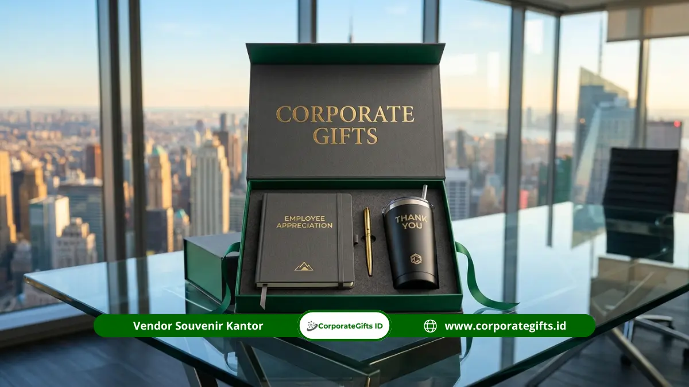

Corporate Gifts ID - Acara temu kebersamaan tahunan (), rekreasi kantor (), maupun perayaan pencapaian target adalah pilar penting dalam merawat ikatan solid antarkaryawan. Memilih souvenir gathering perusahaan untuk karyawan sebaiknya berfokus pada barang yang praktis digunakan sehari-hari, berdaya tahan lama, dan membawa identitas tim yang membanggakan. Opsi seperti tumbler stainless, power bank, pakaian seragam tim, tas jinjing, dan gift set apresiasi menjadi pilihan utama bagi manajemen sumber daya manusia (HR).
Cenderamata gathering yang dirancang dengan matang terasa personal, fungsional dalam rutinitas kerja maupun akhir pekan, serta efektif menumbuhkan rasa bangga menjadi bagian dari keluarga besar organisasi.
Poin Kunci Souvenir Gathering Perusahaan:
- Kegunaan Praktis Sehari-hari: Barang yang memiliki nilai pakai tinggi lebih sering digunakan sehingga pesan apresiasi perusahaan terus dirasakan.
- Lima Opsi Paling Relevan: Tumbler stainless tema acara, power bank fast charging, jaket atau polo shirt tim, tote bag kanvas kuat, dan gift set apresiasi berprestasi.
- Sentuhan Identitas Acara: Memuat tema kegiatan tahunan dan filosofi tim mengubah cenderamata biasa menjadi simbol memorabilia yang berharga.
- Perhitungan Stok & Cadangan: Selalu siapkan cadangan kuantitas sekitar 10 persen dari total peserta untuk mengantisipasi dinamika penambahan peserta lapangan.
Pentingnya Souvenir Gathering dalam Membangun Budaya Perusahaan
Bagi divisi HR dan panitia internal, acara gathering bukan sekadar agenda wisata tahunan. Kegiatan ini merupakan instrumen perajut keakraban antarstaf lintas departemen yang sehari-harinya terpisah jarak atau beban kerja masing-masing.
Souvenir fisik yang dibawa pulang oleh karyawan menjadi jembatan memori yang menjaga kehangatan momen tersebut tetap menyala saat mereka kembali ke meja kerja. Ketika karyawan melihat tumbler atau mengenakan jaket gathering, ingatan tentang kerja sama, tawa bersama, dan kebersamaan tim akan kembali hadir memperkuat motivasi kerja mereka.
5 Souvenir Paling Cocok untuk Acara Gathering Karyawan
Berdasarkan preferensi ribuan karyawan di berbagai korporasi modern, berikut lima opsi cenderamata yang terbukti paling disukai dan bertahan lama:
1. Tumbler Stainless dengan Desain Tema Acara
Botol minum vakum berbahan stainless steel food grade dipakai setiap hari dari ruang kerja hingga saat berolahraga di akhir pekan. Mencetak tema gathering tahunan dengan teknik grafir laser atau sablon doff halus menjadikannya kenangan yang selalu dibawa bepergian.
2. Power Bank Bermerek Bersertifikasi
Perangkat pengisi daya portabel sangat bernilai guna tinggi, terutama bagi karyawan yang sering bertugas ke luar kantor atau aktif di media sosial selama kegiatan rekreasi. Pilihlah kapasitas aman 10.000 mAh dengan sertifikasi resmi agar citra keandalan perusahaan tetap terjaga positif.
3. Jaket, Polo Shirt, atau Kaos Tim
Pakaian seragam acara adalah elemen wajib yang menumbuhkan rasa persatuan seketika di lokasi acara. Pilihlah bahan katun combed yang sejuk atau kain polo lacoste berpori lembut dengan ketersediaan sebaran ukuran yang akurat agar seluruh peserta merasa nyaman memakainya sepanjang hari.
4. Tote Bag Kanvas atau Backpack Ringkas
Tas serbaguna berkapasitas lega sangat berguna untuk membawa perlengkapan pribadi saat perjalanan wisata maupun membawa laptop saat hari kerja reguler. Material kanvas tebal 12 oz atau kain nilon tahan percikan air memberikan daya tahan fisik hingga bertahun-tahun.
5. Gift Set Apresiasi Karyawan Multi-Item
Bagi sesi pengumuman karyawan terbaik () atau tim paling berprestasi di malam puncak gathering, paket gift set eksklusif dalam kotak kaku memberikan penghormatan formal yang sangat membanggakan di hadapan rekan sejawat.

Pemberian paket apresiasi karyawan dalam kemasan tertata rapi meningkatkan nilai penghargaan moral pada malam penganugerahan gathering.
Manfaat Souvenir Gathering bagi Semangat dan Loyalitas Tim
Memberikan cenderamata bermutu tinggi bukan sekadar formalitas pembagian hadiah, melainkan investasi dalam membangun loyalitas internal. Berdasarkan riset ASI Global Ad Impressions Study (2019), tercatat bahwa sekitar 83 persen konsumen dan staf menyukai produk cenderamata yang benar-benar berguna dalam kehidupan sehari-hari.
Prinsip ini menegaskan bahwa semakin tinggi manfaat fungsional suatu barang, semakin sering barang tersebut digunakan dan semakin erat ikatan emosional penerima terhadap entitas pemberinya. Karyawan yang merasa diperhatikan dan dihargai oleh manajemen akan menunjukkan tingkat keterlibatan () yang lebih kokoh.
Bagi tim HR, keseragaman cenderamata berkualitas juga meruntuhkan sekat hierarki antara staf junior dan jajaran manajer senior selama rangkaian kegiatan rekreasi berlangsung.
Cara Menyesuaikan Pilihan Hadiah dengan Karakter Tim
Agar hadiah gathering tidak berakhir terbengkalai di laci kamar, perhatikan profil demografis dan gaya kerja tim Anda:
- Gaya Kerja & Aktivitas: Karyawan operasional lapangan lebih membutuhkan jaket tahan angin dan botol minum berinsulasi dingin, sementara staf kantor di depan komputer menyukai power bank, mousepad kulit, atau kabel pengisi daya multifungsi.
- Rentang Usia Karyawan: Desain bertema minimalis modern dengan warna netral seperti hitam, abu-abu, atau biru dongker dapat diterima dengan baik oleh lintas generasi, baik Generasi X maupun Gen Z.
- Konsep Tema Acara: Selaraskan jenis barang dengan tema kegiatan, misalnya paket olahraga untuk konsepdi pantai, atau cenderamata hangat untuk kegiatan outing di kawasan pegunungan.
- Variasi Ukuran Pakaian: Pastikan mengumpulkan data ukuran tubuh peserta secara teliti sebelum proses konveksi dimulai untuk menghindari komplain ukuran sempit.
Strategi Menghitung Jumlah Pesanan dan Alokasi Anggaran
Perencanaan anggaran yang akurat menjauhkan panitia dari pemborosan biaya maupun kepanikan kekurangan barang di lokasi acara:
- Kompilasi Data Peserta Terkonfirmasi: Kumpulkan daftar kehadiran dari seluruh cabang operasional minimal satu bulan sebelum acara.
- Tambahkan Cadangan 10 Persen: Alokasikan kelebihan kuantitas sekitar 10 persen untuk mengantisipasi kehadiran tamu kehormatan mendadak, staf baru yang baru bergabung, atau penggantian barang yang hilang saat acara.
- Skema Anggaran Berjenjang: Pisahkan antara cenderamata massal yang dibagikan merata ke semua peserta dengan paket penghargaan eksklusif beranggaran lebih tinggi untuk pemenang kuis atau staf berprestasi.
- Alokasi Biaya Pengemasan & Distribusi: Pastikan memasukkan ongkos pengiriman logistik langsung ke lokasi resort atau vila tempat diselenggarakannya kegiatan.
Tabel Matriks Komparasi Opsi Souvenir Gathering Karyawan
Gunakan matriks perbandingan berikut untuk memilih cenderamata yang paling sesuai dengan target audiens dan anggaran gathering Anda:
| Pilihan Souvenir Gathering | Material & Daya Tahan | Kelebihan untuk Karyawan | Kecocokan Tema Acara |
|---|---|---|---|
| Tumbler Stainless Custom | Stainless SUS304 vakum ganda | Dipakai harian di kantor & olahraga | Gathering ramah lingkungan / outing santai |
| Power Bank Fast Charging | Bodi aluminium / polikarbonat tahan bentur | Baterai cadangan vital saat bepergian | Wisata luar kota / outbound berjarak jauh |
| Polo Shirt & Jaket Tim | Katun lacoste / taslan tahan angin | Membangun kekompakan visual seketika | Family gathering / team building outdoor |
| Tote Bag Kanvas Tebal | Kain kanvas 12 oz berserat rapat | Kapasitas muat besar untuk belanja & laptop | Gathering kreatif / wisata belanja |
| Gift Set Apresiasi Kotak | Kombinasi 3 item dalam hardbox kaku | Penghargaan formal bernilai prestise tinggi | Malam puncak anugerah / annual gala dinner |
Tips Mendesain Souvenir Gathering agar Memiliki Nilai Kenangan
Desain yang menarik membedakan antara merchandise yang dibanggakan dan barang yang hanya disimpan di lemari:
- Fokus pada Satu Pesan Inti: Tampilkan slogan utama kegiatan tahunan atau ilustrasi simbolis tim dengan komposisi visual yang bersih dan rapi.
- Hindari Grafis Terlalu Penuh: Menjejali seluruh bodi produk dengan teks panjang dan gambar rumit akan menurunkan nilai estetika barang.
- Gunakan Teknik Personalisasi Sesuai Media: Terapkan grafir laser untuk material logam, bordir komputer presisi untuk bahan kain rajut, dan sablon pasta elastis untuk kaos katun.
Alur Pemesanan Souvenir Gathering di Corporate Gifts ID
Memesan souvenir gathering perusahaan dalam kuantitas ratusan hingga ribuan unit di CorporateGifts.ID sangat praktis melalui tahapan terstruktur:
- Konsultasi Tema & Jumlah Peserta: Sampaikan konsep acara gathering, tanggal pelaksanaan, dan estimasi rentang anggaran per peserta.
- Rekomendasi Katalog & Pilihan Produk: Tim kami menyusun opsi paket yang paling relevan dengan profil karyawan dan tema kegiatan.
- Penyusunan Mockup Desain Gratis: Kami membuat visualisasi pratinjau penempatan logo dan tema gathering pada produk terpilih.
- Produksi Presisi & Quality Control: Pengerjaan massal dilakukan dengan kontrol mutu ketat, termasuk pengecekan fungsi kelistrikan untuk gadget.
- Pengiriman Terjadwal: Seluruh pesanan dikemas aman dalam karton tebal dan dikirimkan tiba di lokasi sebelum hari pelaksanaan acara.
FAQ Seputar Souvenir Gathering Perusahaan Karyawan
Kesimpulan dan Solusi Pemesanan Cepat Bersama Kami
Pemberian souvenir gathering perusahaan untuk karyawan paling efektif bila memiliki kegunaan nyata, memuat tema acara yang membanggakan, serta dipilih selaras dengan karakter tim kerja Anda. Rencanakan jumlah pemesanan, pembagian anggaran, dan jadwal waktu produksi sejak jauh hari agar mutu produk tetap terjamin paripurna.
Siap membuat acara gathering perusahaan Anda berikutnya lebih berkesan dan mempererat kekompakan seluruh karyawan? Hubungi tim konsultan CorporateGifts.ID dan pesan paket souvenir gathering custom berkualitas sekarang juga.

Ditulis oleh: Sholikhatun Nikmah
Creative Product Designer & Bespoke Packaging ConsultantDesainer produk dan konsultan pengemasan cenderamata B2B di CorporateGifts.ID. Berpengalaman lebih dari 8 tahun dalam merancang konsep hadiah korporat elegan, kurasi material ramah lingkungan, serta teknik personalisasi logo premium untuk memperkuat relasi institusi.
Lihat Profil Lengkap & Panduan Lainnya